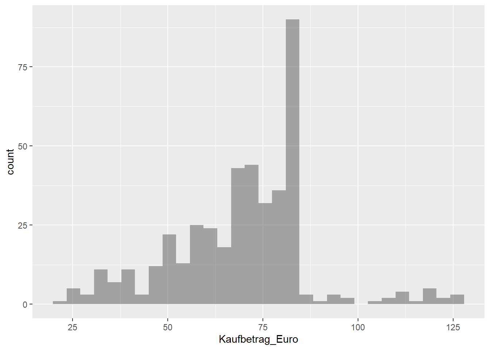
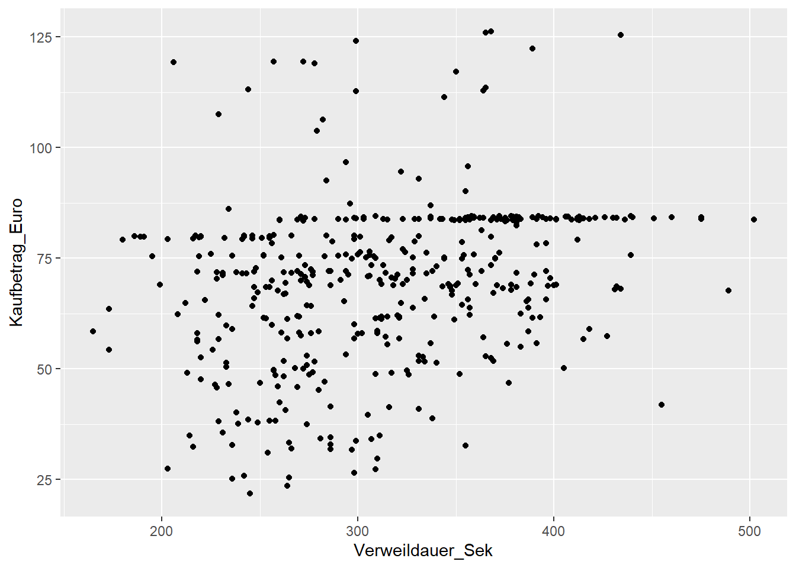
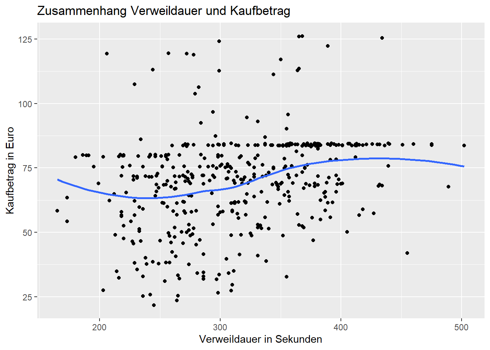
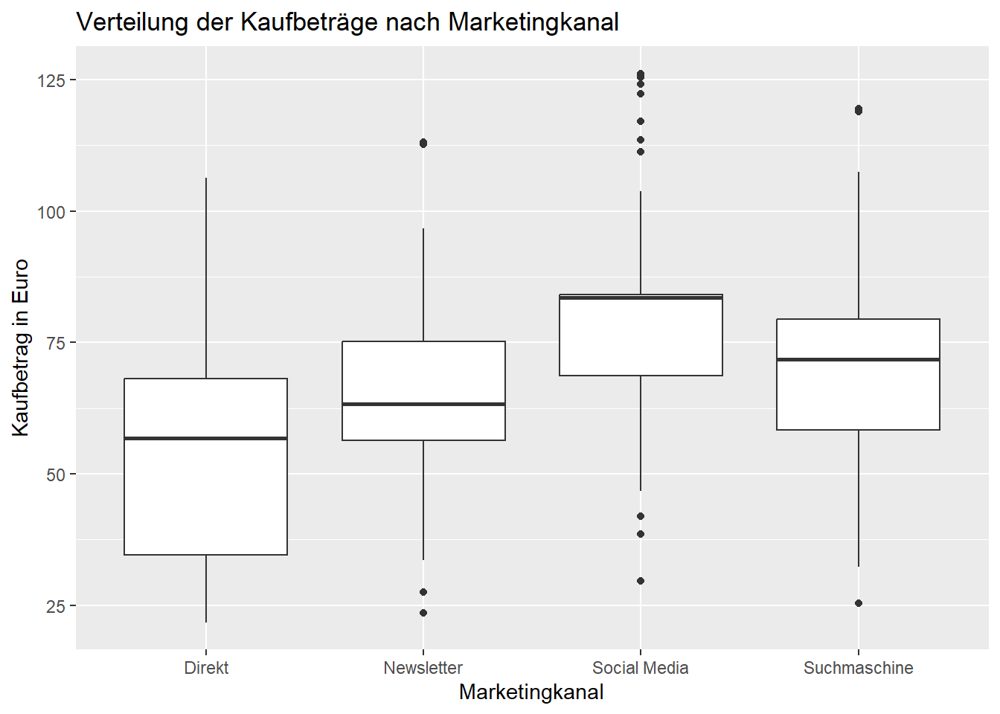
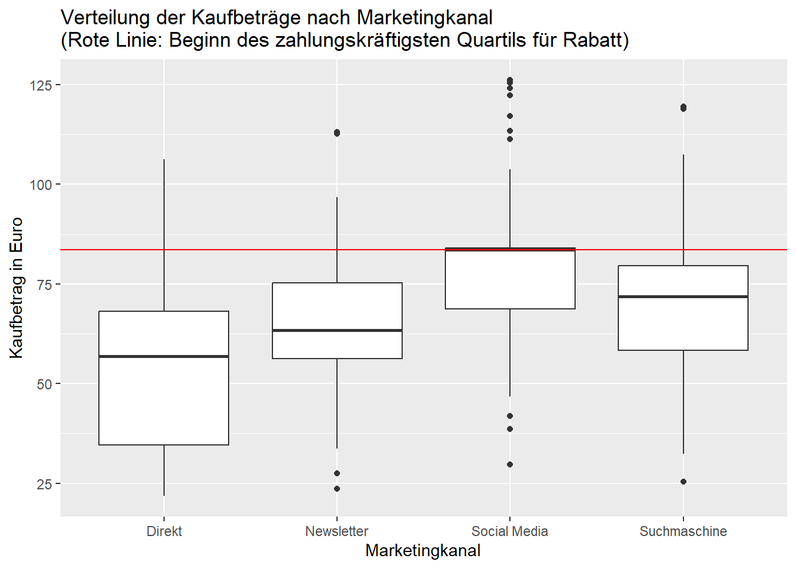

In diesem Beispiel werden wir uns einen fiktiven CRM-Datensatz (Customer Relationship Management) anschauen, der so auch in jedem Unternehmen mit Onlineshop und Onlinewerbeaktivitäten anfallen könnte.
Es handelt sich, um CRM-Daten des fiktiven Textilunternehmens “FOMYGA”, welches hauptsächlich Yoga-Kleidung und -Zubehör vertreibt. Als Teil der Marketingabteilung wollen Sie sich anschauen, welcher der genutzten Marketingkanäle am stärksten auf Ihre Sales einzahlen und welche Kundensegmente von welchen Kanälen am besten erreicht werden.
Dafür stehen Ihnen die gesammelten Informationen von insgesamt 427 KundInnen (n=427) zur Verfügung, die in der letzten Woche im Onlineshop von FOMYGA eingekauft haben. Diese umfassen:
- Kunden ID zum identifizieren einzelner Kunden (KundenID)
- Alter in Jahren (Alter)
- Geschlecht (Geschlecht)
- Marketingkanal über den auf den Shop zugegriffen wurde (Marketingkanal)
- Verweildauer im Shop in Sekunden (Verweildauer_Sek)
- Kaufbetrag in Euro (Kaufbetrag_Euro)
Um in die Analyse zu starten lesen wir uns aus einer CSV-Datei den Datensatz ein und lassen uns mit str() die grobe Struktur des Datensatzes anzeigen.
# Daten direkt über Pfad einlesenCRM <-read.csv2(here("CRM_Datensatz.csv"))# Struktur des Datensatzes anzeigenstr(CRM)
Handelt es sich um eine Beobachtungsstudie oder um ein randomisiertes Experiment?
Was ist hier eine Beobachtungseinheit?
Wie viele Beobachtungen liegen vor?
Wie viele Variablen liegen vor?
Welches Skalenniveau besitzen die einzelnen Variablen?
Umsatzziele
Durch neue Marketingmaßnahmen haben Sie versucht den durchschnittlichen Kaufbetrag ihrer Kunden im Onlineshop auf über 65 Euro zu erhöhen.
favstats() liefert einen Überblick über die gängigen Kennzahlen einer metrischen Variable:
# Deskriptive Kennwertefavstats(~Kaufbetrag_Euro, data = CRM)
min Q1 median Q3 max mean sd n missing
21.77 58.315 71.5 83.62 126.2 69.59396 18.44081 427 0
Fragen
Wie hoch ist der durchschnittliche Kaufbetrag (Arithmetisches Mittel)? Konnten Sie ihr Ziel erreichen?
Wie viel Euro hat der teuerste Einkauf im Onlineshop gekostet (Maximum)?
Sie möchten dem zahlungskräftigsten Quartil Ihrer Kunden einen Rabatt anbieten. Was sind entsprechend die Grenzen des vierten Quartils?
Wer sind Ihre Kunden?
Um rauszufinden welche Gruppen besonders häufig im Onlineshop einkaufen schauen Sie sich die Geschlechtsverteilung ihrer Kunden sowie die durchschnittlichen Kaufbeträge im Verhältnis zum Geschlecht an. tally() zeigt die Häufigkeiten der Ausprägungen einer Variable an.
# Häufigkeitentally(~Geschlecht, data=CRM)
Geschlecht
männlich weiblich
127 300
# Deskriptive Kennwertefavstats(Kaufbetrag_Euro ~ Geschlecht, data = CRM)
Geschlecht min Q1 median Q3 max mean sd n missing
1 männlich 23.60 50.20 61.26 68.9950 107.49 58.27638 14.97994 127 0
2 weiblich 21.77 65.73 76.34 83.8925 126.20 74.38507 17.67784 300 0
Fragen:
Wie hoch ist die Standardabweichung bei den Frauen? Wie hoch ist sie bei den Männern?
Wie groß ist die Spannweite (Range) bei Männern? Wie groß ist sie bei Frauen?
Passen Sie den Code so an, dass Sie sich die Verweildauer im Verhältnis zum Geschlecht anschauen können. Welches Geschlecht ist im Schnitt länger in Ihrem Onlineshop?
Altersgruppen
Als nächstes möchten Sie wissen bei welchen Altersgruppen Sie besonders erfolgreich sind. Hierfür transformieren Sie die Variable Alter abhängig vom Geschlecht in verschiedene Altersgruppen von 18-39 Jahren, 40-59 Jahren und 60+ Jahren.
Um die Kundensegmente nach Alter und Geschlecht zu bilden, gehen wir in mehreren Schritten vor. Zunächst teilen wir mit der Funktion cut() das Alter in drei Gruppen ein: von 18 bis 39, von 40 bis 59 und ab 60 Jahren. cut() hilft uns also dabei, eine durchgehende metrische Variable wie „Alter“ in sinnvolle Kategorien zu unterteilen, indem wir die Grenzen der Altersgruppen festlegen und jedem Alter eine Altersgruppe zuweisen.
Im nächsten Schritt wollen wir das Geschlecht nicht als langen Text (“männlich”), sondern als Kürzel (“M”) angezeigt bekommen, damit es sich gut mit der Altersgruppe kombinieren lässt. Dafür verwenden wir ifelse(). Diese Funktion prüft zeilenweise (also für jede/n KundIn), ob die Angabe „männlich“ vorliegt, und wandelt sie in „M“ um, andernfalls in „W“. So haben wir eine kurze und einheitliche Repräsentation für das Geschlecht.
Abschließend fügen wir mit paste0() beide Informationen – also die Geschlechtskürzel (“M” oder “W”) und die Altersgruppe – zu einem neuen Merkmal zusammen, zum Beispiel „W18-39“ für eine Frau aus der jüngsten Altersgruppe. paste0() verbindet dabei die beiden Zeichenketten ohne Leerzeichen, sodass wir eine kompakte und aussagekräftige Gruppierung erhalten, die wir für weitere Analysen verwenden können.
So entsteht aus dem ursprünglichen Alter und Geschlecht eine neue Variable „Altersgruppe“, die die Kundensegmente klar kennzeichnet und die weitere Auswertungen auf Kollektivebene ermöglicht.
Welches Kundensegment gibt in Ihrem Shop im Schnitt am meisten Geld aus (Arithmetisches Mittel)?
In welchem Kundensegment wurde der günstigste Einkauf getätigt (Minimum)?
Welches Kundensegment hat die größte Streuung um seinen Mittelwert (Standardabweichung)?
Betrachten Sie nun die Verweildauer im Verhältnis zu den Altersgruppen. Passen Sie die Altersgruppen dabei auf Abstände von 18-35, 36-45, 46-55 und 56+ Jahren an. Nimmt der Durchschnittswert der jüngsten Gruppe Frauen und Männer jeweils eher ab oder zu?
Ist Ihr Marketing erfolgreich?
In den letzten Wochen haben Sie ihre Werbeaktivitäten stärker auf Social Media Anzeigen konzentriert. Sie wollen herausfinden, ob dies sich ausgezahlt hat und vergleichen die Daten zu den Kaufbeträgen über die einzelnen Marketingkanäle.
# Häufigkeitentally(~Marketingkanal, data = CRM)
Marketingkanal
Direkt Newsletter Social Media Suchmaschine
55 86 193 93
# Deskriptive Kennwertefavstats(Kaufbetrag_Euro ~ Marketingkanal, data = CRM)
Marketingkanal min Q1 median Q3 max mean sd n
1 Direkt 21.77 34.5800 56.78 68.0900 106.32 53.24164 18.71566 55
2 Newsletter 23.60 56.3275 63.32 75.2175 113.09 64.81360 17.17576 86
3 Social Media 29.68 68.6800 83.60 84.0800 126.20 76.81233 15.05270 193
4 Suchmaschine 25.42 58.3900 71.81 79.5100 119.47 68.70516 18.22880 93
missing
1 0
2 0
3 0
4 0
Fragen
Welcher Marketingkanal hat im Schnitt den höchsten Umsatz erzielt? (Arithmetisches Mittel)
Über welchen Marketingkanal kam der teuerste Einkauf zustande? (Maximum)
Histogramm / Kaufbetragsverteilung
Um die Verteilung der Kaufbeträge unserer KundInnen besser zu verstehen, betrachten wir als nächstes ein Histogramm der Kaufbetrag-Variable. Ein Histogramm zeigt, wie häufig verschiedene Kaufbeträge im Datensatz vorkommen. Dabei werden Kaufwerte in Klassen zusammengefasst und die Anzahl der Kunden in jeder Klasse visualisiert. So können wir auf einen Blick erkennen, ob es bestimmte Kaufbetrag-Kategorien gibt, die besonders häufig sind, oder wie breit das Spektrum der Kaufbeträge in unserem Kundenstamm ist. Der Modus bezeichnet dabei die häufigste Ausprägung einer Variable.
#Erstellung des Histogrammsgf_histogram( ~ Kaufbetrag_Euro, data = CRM)

Fragen
Wo liegt der Bereich mit den meisten Einkäufen (Modus)?
Ist die Verteilung symmetrisch? Linkssteil? Oder rechtsschief?
Gibt es Ausreißer, d. h. ungewöhnlich niedrige oder hohe Kaufbeträge?
Liegen der Mittelwert und der Median vermutlich dicht beieinander? Begründe deine Einschätzung anhand des Histogramms.
Kaufen Kunden, die länger im Onlineshop sind auch mehr ein?
Sie interessiert, ob eine längere Verweildauer im Onlineshop auch mit größeren Einkäufen und damit einem höheren Kaufbetrag einhergeht. Dafür stellen Sie die beiden Werte in einem Streudiagramm gegenüber. Ein Streudiagramm (auch Scatterplot genannt) ist eine grafische Darstellung, die zeigt, wie zwei metrische Variablen miteinander zusammenhängen. Jeder Punkt im Diagramm steht für eine Beobachtung und zeigt die Werte beider Variablen – zum Beispiel die Verweildauer und den Kaufbetrag eines Kunden. So lassen sich Muster, Trends oder Zusammenhänge visuell erkennen.
#Erstellung des Streudiagrammsgf_point(Kaufbetrag_Euro ~ Verweildauer_Sek, data = CRM)

Fragen
Wofür steht ein Punkt in der Abbildung?
Ist der Zusammenhang zwischen Kaufbetrag und Verweildauer linear?
Wie lässt sich dieser Zusammenhang interpretieren?
Als Interpretationsstütze hilft eine Glättungslinie, um den Zusammenhang klarer zu visualisieren. Dem Streudiagramm können wir mit gf_smooth()eine Glättungslinie hinzufügen, die hilft den Zusammenhang besser zu verstehen. Außerdem fügen Sie Achsenbeschriftungen und Titel mit gf_labs() hinzu.
#Erstellung des Streudiagrammsgf_point(Kaufbetrag_Euro ~ Verweildauer_Sek, data = CRM) |>gf_smooth() |>#Mit Glättugnsliniegf_labs(x ="Verweildauer in Sekunden", #Mit Achsenbeschriftungeny ="Kaufbetrag in Euro",title ="Zusammenhang Verweildauer und Kaufbetrag") #Mit Überschrift

Fragen
Welche Aussage lässt sich aufgrund der Glättungslinie über den Zusammenhang zwischen Verweildauer und Kaufbetrag treffen?
Ist der Zusammenhang linear, monoton steigend/fallend oder gibt es Anzeichen für eine Sättigung?
Gibt es Punkte weit weg vom allgemeinen Trend, die die Interpretation beeinflussen könnten?
Kaufbetrag nach Marketingkanal: Boxplot-Analyse
Um zu untersuchen, wie erfolgreich die verschiedenen Marketingkanäle sind und ob es Unterschiede in den Kaufbeträgen gibt, betrachten wir die Verteilung der Kaufbeträge je Marketingkanal mit einem Boxplot. Boxplots sind ein zentrales Werkzeug der explorativen Datenanalyse, da sie kompakt zeigen, wie groß die Streuung der Werte ist, wo der Median liegt und ob es Ausreißer gibt.
Jeder Kasten (Box) im Boxplot stellt die mittleren 50% der Daten (zwischen erstem und drittem Quartil) eines Kanals dar. Die Linie in der Mitte zeigt den Median. Die Enden (“Whisker”) geben Minimal- und Maximalwerte (ohne Ausreißer) an. Werte, die sehr weit vom Rest der Daten entfernt liegen, werden als Ausreißer markiert.
Mit folgendem Befehl können Verteilungen der Kaufbeträge für die einzelnen Marketingkanäle als Boxplots grafisch verglichen werden:
# Boxplot: Kaufbetrag nach Marketingkanalgf_boxplot(Kaufbetrag_Euro ~ Marketingkanal, data = CRM) |>gf_labs(x ="Marketingkanal",y ="Kaufbetrag in Euro",title ="Verteilung der Kaufbeträge nach Marketingkanal" )

Da wir, wie oben erwähnt, eine Rabattaktion für unser zahlungskräftigstes Kundenquartil (das vierte Quartil) planen, ist es sinnvoll, diesen Schwellenwert in der Visualisierung darzustellen. Die rote Linie im Boxplot kennzeichnet daher den Kaufbetrag, ab dem ein Kunde zum Q4 gehört und somit für die Rabattaktion in Frage kommt.
# Quartilsgrenze Q3 als Schwellenwert für Rabattaktion berechnenq4_schwelle <-favstats(~Kaufbetrag_Euro, data = CRM)$Q3# Boxplot Kaufbetrag je Marketingkanal mit roter Linie für Rabatt-Q4gf_boxplot(Kaufbetrag_Euro ~ Marketingkanal, data = CRM) |>gf_hline(yintercept = q4_schwelle, color ="red") |>gf_labs(x ="Marketingkanal",y ="Kaufbetrag in Euro",title ="Verteilung der Kaufbeträge nach Marketingkanal\n(Rote Linie: Beginn des zahlungskräftigsten Quartils für Rabatt)" )

Fragen
In welchem Marketingkanal liegen die höchsten Kaufbeträge regelmäßig über der Rabattgrenze (rote Linie)?
Welcher Kanal hat die größte Streuung der Kaufbeträge?
Welcher Kanal hat den geringsten Interquartilsabstand?
Welcher Kanal hat die größte Spannweite?
Wie unterscheiden sich die Medianwerte der Kaufbeträge zwischen den Kanälen?
Ranken Sie die Kaufbeträge absteigend für Maximum, Minimum und Median.
Your turn
Schreiben Sie den benötigten Code, um sich die Verteilung der Kaufbeträge spezifisch für die von Ihnen erstellten Kundensegmente aus der Variable Altersgruppe (mit den Ausprägungen M18-35 usw. und W18-35 usw.) als Boxplots anzuschauen. Benennen Sie Ihr Diagramm und generieren Sie eine rote Linie die den Median aller Kaufbeträge (Kaufbetrag_Euro) markiert.